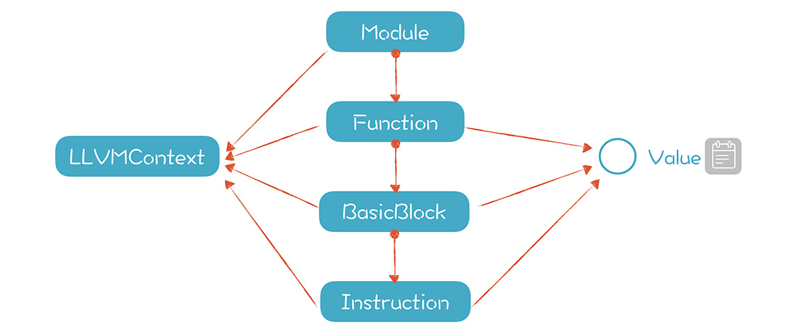
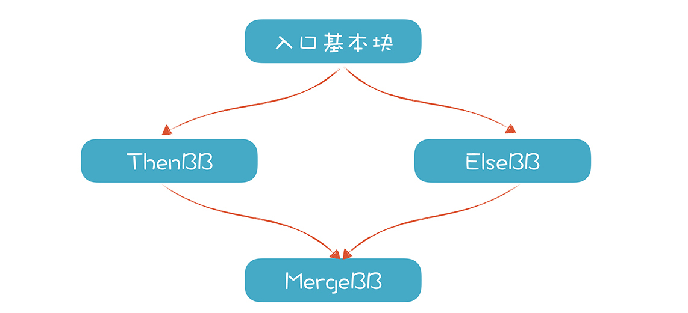

- 00 开篇词 为什么你要学习编译原理？.md
- 01 理解代码：编译器的前端技术.md
- 02 正则文法和有限自动机：纯手工打造词法分析器.md
- 03 语法分析（一）：纯手工打造公式计算器.md
- 04 语法分析（二）：解决二元表达式中的难点.md
- 05 语法分析（三）：实现一门简单的脚本语言.md
- 06 编译器前端工具（一）：用Antlr生成词法、语法分析器.md
- 07 编译器前端工具（二）：用Antlr重构脚本语言.md
- 08 作用域和生存期：实现块作用域和函数.md
- 09 面向对象：实现数据和方法的封装.md
- 10 闭包： 理解了原理，它就不反直觉了.md
- 11 语义分析（上）：如何建立一个完善的类型系统？.md
- 12 语义分析（下）：如何做上下文相关情况的处理？.md
- 13 继承和多态：面向对象运行期的动态特性.md
- 14 前端技术应用（一）：如何透明地支持数据库分库分表？.md
- 15 前端技术应用（二）：如何设计一个报表工具？.md
- 16 NFA和DFA：如何自己实现一个正则表达式工具？.md
- 17 First和Follow集合：用LL算法推演一个实例.md
- 18 移进和规约：用LR算法推演一个实例.md
- 19 案例总结与热点问题答疑：对于左递归的语法，为什么我的推导不是左递归的？.md
- 20 高效运行：编译器的后端技术.md
- 21 运行时机制：突破现象看本质，透过语法看运行时.md
- 22 生成汇编代码（一）：汇编语言其实不难学.md
- 23 生成汇编代码（二）：把脚本编译成可执行文件.md
- 24 中间代码：兼容不同的语言和硬件.md
- 25 后端技术的重用：LLVM不仅仅让你高效.md
- 26 生成IR：实现静态编译的语言.md
- 27 代码优化：为什么你的代码比他的更高效？.md
- 28 数据流分析：你写的程序，它更懂.md
- 29 目标代码的生成和优化（一）：如何适应各种硬件架构？.md
- 30 目标代码的生成和优化（二）：如何适应各种硬件架构？.md
- 31 内存计算：对海量数据做计算，到底可以有多快？.md
- 32 字节码生成：为什么Spring技术很强大？.md
- 33 垃圾收集：能否不停下整个世界？.md
- 34 运行时优化：即时编译的原理和作用.md
- 35 案例总结与热点问题答疑：后端部分真的比前端部分难吗？.md
- 36 当前技术的发展趋势以及其对编译技术的影响.md
- 37 云编程：云计算会如何改变编程模式？.md
- 38 元编程：一边写程序，一边写语言.md
- 加餐 汇编代码编程与栈帧管理.md
- 用户故事 因为热爱，所以坚持.md
- 第二季回归 这次，我们一起实战解析真实世界的编译器.md
- 结束语 用程序语言，推动这个世界的演化.md
26 生成IR：实现静态编译的语言
目前来讲，你已经初步了解了LLVM和它的IR，也能够使用它的命令行工具。不过，我们还是要通过程序生成LLVM的IR，这样才能复用LLVM的功能，从而实现一门完整的语言。
不过，如果我们要像前面生成汇编语言那样，通过字符串拼接来生成LLVM的IR，除了要了解LLVM IR的很多细节之外，代码一定比较啰嗦和复杂，因为字符串拼接不是结构化的方法，所以，最好用一个定义良好的数据结构来表示IR。
好在LLVM项目已经帮我们考虑到了这一点，它提供了代表LLVM IR的一组对象模型，我们只要生成这些对象，就相当于生成了IR，这个难度就低多了。而且，LLVM还提供了一个工具类，IRBuilder，我们可以利用它，进一步提升创建LLVM IR的对象模型的效率，让生成IR的过程变得更加简单！
接下来，就让我们先来了解LLVM IR的对象模型。
LLVM IR的对象模型
LLVM在内部有用C++实现的对象模型，能够完整表示LLVM IR，当我们把字节码读入内存时，LLVM就会在内存中构建出这个模型。只有基于这个对象模型，我们才可以做进一步的工作，包括代码优化，实现即时编译和运行，以及静态编译生成目标文件。所以说，这个对象模型是LLVM运行时的核心。

IR对象模型的头文件在include/llvm/IR目录下，其中最重要的类包括：
- Module（模块）
Module类聚合了一个模块中的所有数据，它可以包含多个函数。你可以通过Model::iterator来遍历模块中所有的函数。它也包含了一个模块的全局变量。
- Function（函数）
Function包含了与函数定义（definition）或声明（declaration）有关的所有对象。函数定义包含了函数体，而函数声明，则仅仅包含了函数的原型，它是在其他模块中定义的，在本模块中使用。
你可以通过getArgumentList()方法来获得函数参数的列表，也可以遍历函数体中的所有基本块，这些基本块会形成一个CFG（控制流图）。
//函数声明，没有函数体。这个函数是在其他模块中定义的，在本模块中使用
declare void @foo(i32)
//函数定义，包含函数体
define i32 @fun3(i32 %a) {
%calltmp1 = call void @foo(i32 %a) //调用外部函数
ret i32 10
}
- BasicBlock（基本块）
BasicBlock封装了一系列的LLVM指令，你可以借助bigin()/end()模式遍历这些指令，还可以通过getTerminator()方法获得最后一条指令（也就是终结指令）。你还可以用到几个辅助方法在CFG中导航，比如获得某个基本块的前序基本块。
- Instruction（指令）
Instruction类代表了LLVM IR的原子操作（也就是一条指令），你可以通过getOpcode()来获得它代表的操作码，它是一个llvm::Instruction枚举值，你可以通过op_begin()和op_end()方法对获得这个指令的操作数。
- Value（值）
Value类代表一个值。在LLVM的内存IR中，如果一个类是从Value继承的，意味着它定义了一个值，其他方可以去使用。函数、基本块和指令都继承了Value。
- LLVMContext（上下文）
这个类代表了LLVM做编译工作时的一个上下文，包含了编译工作中的一些全局数据，比如各个模块用到的常量和类型。
这些内容是LLVM IR对象模型的主要部分，我们生成IR的过程，就是跟这些类打交道，其他一些次要的类，你可以在阅读和编写代码的过程中逐渐熟悉起来。
接下来，就让我们用程序来生成LLVM的IR。
尝试生成LLVM IR
我刚刚提到的每个LLVM IR类，都可以通过程序来构建。那么，为下面这个fun1()函数生成IR，应该怎么办呢？
int fun1(int a, int b){
return a+b;
}
第一步，我们可以来生成一个LLVM模块，也就是顶层的IR对象。
Module *mod = new Module("fun1.ll", TheModule);
第二步，我们继续在模块中定义函数fun1，因为模块最主要的构成要素就是各个函数。
不过在定义函数之前，要先定义函数的原型（或者叫函数的类型）。函数的类型，我们在前端讲过：如果两个函数的返回值相同，并且参数也相同，这两个函数的类型是相同的，这样就可以做函数指针或函数型变量的赋值。示例代码的函数原型是：返回值是32位整数，参数是两个32位整数。
有了函数原型以后，就可以使用这个函数原型定义一个函数。我们还可以为每个参数设置一个名称，便于后面引用这个参数。
//函数原型
vector<Type *> argTypes(2, Type::getInt32Ty(TheContext));
FunctionType *fun1Type = FunctionType::get(Type::getInt32Ty(TheContext), //返回值是整数
argTypes, //两个整型参数
false); //不是变长参数
//函数对象
Function *fun = Function::Create(fun1Type,
Function::ExternalLinkage, //链接类型
"fun2", //函数名称
TheModule.get()); //所在模块
//设置参数名称
string argNames[2] = {"a", "b"};
unsigned i = 0;
for (auto &arg : fun->args()){
arg.setName(argNames[i++]);
}
这里你需要注意，代码中是如何使用变量类型的。所有的基础类型都是提前定义好的，可以通过Type类的getXXXTy()方法获得（我们使用的是Int32类型，你还可以获得其他类型）。
第三步，创建一个基本块。
这个函数只有一个基本块，你可以把它命名为“entry”，也可以不给它命名。在创建了基本块之后，我们用了一个辅助类IRBuilder，设置了一个插入点，后序生成的指令会插入到这个基本块中（IRBuilder是LLVM为了简化IR生成过程所提供的一个辅助类）。
//创建一个基本块
BasicBlock *BB = BasicBlock::Create(TheContext,//上下文
"", //基本块名称
fun); //所在函数
Builder.SetInsertPoint(BB); //设置指令的插入点
第四步，生成”a+b”表达式所对应的IR，插入到基本块中。
a和b都是函数fun的参数，我们把它取出来，分别赋值给L和R（L和R是Value）。然后用IRBuilder的CreateAdd()方法，生成一条add指令。这个指令的计算结果存放在addtemp中。
//把参数变量存到NamedValues里面备用
NamedValues.clear();
for (auto &Arg : fun->args())
NamedValues[Arg.getName()] = &Arg;
//做加法
Value *L = NamedValues["a"];
Value *R = NamedValues["b"];
Value *addtmp = Builder.CreateAdd(L, R);
第五步，利用刚才获得的addtmp创建一个返回值。
//返回值
Builder.CreateRet(addtmp);
最后一步，检查这个函数的正确性。这相当于是做语义检查，比如，基本块的最后一个语句就必须是一个正确的返回指令。
//验证函数的正确性
verifyFunction(*fun);
完整的代码我也提供给你，放在codegen_fun1()里了，你可以看一下。我们可以调用这个方法，然后打印输出生成的IR：
Function *fun1 = codegen_fun1(); //在模块中生成Function对象
TheModule->print(errs(), nullptr); //在终端输出IR
生成的IR如下：
; ModuleID = 'llvmdemo'
source_filename = "llvmdemo"
define i32 @fun1(i32 %a, i32 %b) {
%1 = add i32 %a, %b
ret i32 %1
}
这个例子简单，过程直观，只有一个加法运算，而我建议你在这个过程中注意每个IR对象都是怎样被创建的，在大脑中想象出整个对象结构。
为了熟悉更多的API，接下来，我再带你生成一个稍微复杂一点儿的，带有if语句的IR。然后来看一看，函数中包含多个基本块的情况。
支持if语句
具体说，我们要为下面的一个函数生成IR（函数有一个参数a，当a大于2的时候，返回2；否则返回3）。
int fun_ifstmt(int a)
if (a > 2)
return 2;
else
return 3；
}
这样的一个函数，需要包含4个基本块：入口基本块、Then基本块、Else基本块和Merge基本块。控制流图（CFG）是先分开，再合并，像下面这样：

在入口基本块中，我们要计算“a>2”的值，并根据这个值，分别跳转到ThenBB和ElseBB。这里，我们用到了IRBuilder的CreateICmpUGE()方法（UGE的意思，是”不大于等于“，也就是小于）。这个指令的返回值是一个1位的整型，也就是int1。
//计算a>2
Value * L = NamedValues["a"];
Value * R = ConstantInt::get(TheContext, APInt(32, 2, true));
Value * cond = Builder.CreateICmpUGE(L, R, "cmptmp");
接下来，我们创建另外3个基本块，并用IRBuilder的CreateCondBr()方法创建条件跳转指令：当cond是1的时候，跳转到ThenBB，0的时候跳转到ElseBB。
BasicBlock *ThenBB =BasicBlock::Create(TheContext, "then", fun);
BasicBlock *ElseBB = BasicBlock::Create(TheContext, "else");
BasicBlock *MergeBB = BasicBlock::Create(TheContext, "ifcont");
Builder.CreateCondBr(cond, ThenBB, ElseBB);
如果你细心的话，可能会发现，在创建ThenBB的时候，指定了其所在函数是fun，而其他两个基本块没有指定。这是因为，我们接下来就要为ThenBB生成指令，所以先加到fun中。之后，再顺序添加ElseBB和MergeBB到fun中。
//ThenBB
Builder.SetInsertPoint(ThenBB);
Value *ThenV = ConstantInt::get(TheContext, APInt(32, 2, true));
Builder.CreateBr(MergeBB);
//ElseBB
fun->getBasicBlockList().push_back(ElseBB); //把基本块加入到函数中
Builder.SetInsertPoint(ElseBB);
Value *ElseV = ConstantInt::get(TheContext, APInt(32, 3, true));
Builder.CreateBr(MergeBB);
在ThenBB和ElseBB这两个基本块的代码中，我们分别计算出了两个值：ThenV和ElseV。它们都可能是最后的返回值，但具体采用哪个，还要看实际运行时，控制流走的是ThenBB还是ElseBB。这就需要用到phi指令，它完成了根据控制流来选择合适的值的任务。
//MergeBB
fun->getBasicBlockList().push_back(MergeBB);
Builder.SetInsertPoint(MergeBB);
//PHI节点：整型，两个候选值
PHINode *PN = Builder.CreatePHI(Type::getInt32Ty(TheContext), 2);
PN->addIncoming(ThenV, ThenBB); //前序基本块是ThenBB时，采用ThenV
PN->addIncoming(ElseV, ElseBB); //前序基本块是ElseBB时，采用ElseV
//返回值
Builder.CreateRet(PN);
从上面这段代码中你能看出，在if语句中，phi指令是关键。因为当程序的控制流经过多个基本块，每个基本块都可能改变某个值的时候，通过phi指令可以知道运行时实际走的是哪条路径，从而获得正确的值。
最后生成的IR如下，其中的phi指令指出，如果前序基本块是then，取值为2，是else的时候取值为3。
define i32 @fun_ifstmt(i32 %a) {
%cmptmp = icmp uge i32 %a, 2
br i1 %cmptmp, label %then, label %else
then: ; preds = %0
br label %ifcont
else: ; preds = %0
br label %ifcont
ifcont: ; preds = %else, %then
%1 = phi i32 [ 2, %then ], [ 3, %else ]
ret i32 %1
}
其实循环语句也跟if语句差不多，因为它们都是要涉及到多个基本块，要用到phi指令，所以一旦你会写if语句，肯定就会写循环语句的。
支持本地变量
在写程序的时候，本地变量是必不可少的一个元素，所以，我们趁热打铁，把刚才的示例程序变化一下，用本地变量b保存ThenBB和ElseBB中计算的值，借此学习一下LLVM IR是如何支持本地变量的。
改变后的示例程序如下：
int fun_localvar(int a)
int b = 0;
if (a > 2)
b = 2;
else
b = 3;
return b;
}
其中，函数有一个参数a，一个本地变量b：如果a大于2，那么给b赋值2；否则，给b赋值3。最后的返回值是b。
现在挑战来了，在这段代码中，b被声明了一次，赋值了3次。我们知道，LLVM IR采用的是SSA形式，也就是每个变量只允许被赋值一次，那么对于多次赋值的情况，我们该如何生成IR呢？
其实，LLVM规定了对寄存器只能做单次赋值，而对内存中的变量，是可以多次赋值的。对于“int b = 0;”，我们用下面几条语句生成IR：
//本地变量b
AllocaInst *b = Builder.CreateAlloca(Type::getInt32Ty(TheContext), nullptr, "b");
Value* initValue = ConstantInt::get(TheContext, APInt(32, 0, true));
Builder.CreateStore(initValue, b);
上面这段代码的含义是：首先用CreateAlloca()方法，在栈中申请一块内存，用于保存一个32位的整型，接着，用CreateStore()方法生成一条store指令，给b赋予初始值。
上面几句生成的IR如下：
%b = alloca i32
store i32 0, i32* %b
接着，我们可以在ThenBB和ElseBB中，分别对内存中的b赋值：
//ThenBB
Builder.SetInsertPoint(ThenBB);
Value *ThenV = ConstantInt::get(TheContext, APInt(32, 2, true));
Builder.CreateStore(ThenV, b);
Builder.CreateBr(MergeBB);
//ElseBB
fun->getBasicBlockList().push_back(ElseBB);
Builder.SetInsertPoint(ElseBB);
Value *ElseV = ConstantInt::get(TheContext, APInt(32, 3, true));
Builder.CreateStore(ElseV, b);
Builder.CreateBr(MergeBB);
最后，在MergeBB中，我们只需要返回b就可以了：
//MergeBB
fun->getBasicBlockList().push_back(MergeBB);
Builder.SetInsertPoint(MergeBB);
//返回值
Builder.CreateRet(b);
最后生成的IR如下：
define i32 @fun_ifstmt.1(i32 %a) {
%b = alloca i32
store i32 0, i32* %b
%cmptmp = icmp uge i32 %a, 2
br i1 %cmptmp, label %then, label %else
then: ; preds = %0
store i32 2, i32* %b
br label %ifcont
else: ; preds = %0
store i32 3, i32* %b
br label %ifcont
ifcont: ; preds = %else, %then
ret i32* %b
}
当然，使用内存保存临时变量的性能比较低，但我们可以很容易通过优化算法，把上述代码从使用内存的版本，优化成使用寄存器的版本。
通过上面几个示例，现在你已经学会了生成基本的IR，包括能够支持本地变量、加法运算、if语句。那么这样生成的IR能否正常工作呢？我们需要把这些IR编译和运行一下才知道。
编译并运行程序
现在已经能够在内存中建立LLVM的IR对象了，包括模块、函数、基本块和各种指令。LLVM可以即时编译并执行这个IR模型。
我们先创建一个不带参数的__main()函数作为入口。同时，我会借这个例子延伸讲一下函数的调用。我们在前面声明了函数fun1，现在在__main()函数中演示如何调用它。
Function * codegen_main(){
//创建main函数
FunctionType *mainType = FunctionType::get(Type::getInt32Ty(TheContext), false);
Function *main = Function::Create(mainType, Function::ExternalLinkage, "__main", TheModule.get());
//创建一个基本块
BasicBlock *BB = BasicBlock::Create(TheContext, "", main);
Builder.SetInsertPoint(BB);
//设置参数的值
int argValues[2] = {2, 3};
std::vector<Value *> ArgsV;
for (unsigned i = 0; i<2; ++i) {
Value * value = ConstantInt::get(TheContext, APInt(32,argValues[i],true));
ArgsV.push_back(value);
if (!ArgsV.back())
return nullptr;
}
//调用函数fun1
Function *callee = TheModule->getFunction("fun1");
Value * rtn = Builder.CreateCall(callee, ArgsV, "calltmp");
//返回值
Builder.CreateRet(rtn);
return main;
}
调用函数时，我们首先从模块中查找出名称为fun1的函数，准备好参数值，然后通过IRBuilder的CreateCall()方法来生成函数调用指令。最后生成的IR如下：
define i32 @__main() {
%calltmp = call i32 @fun1(i32 2, i32 3)
ret i32 %calltmp3
}
接下来，我们调用即时编译的引擎来运行__main函数（与JIT引擎有关的代码，放到了DemoJIT.h中，你现在可以暂时不关心它的细节，留到以后再去了解）。使用这个JIT引擎，我们需要做几件事情：
1.初始化与目标硬件平台有关的设置。
InitializeNativeTarget();
InitializeNativeTargetAsmPrinter();
InitializeNativeTargetAsmParser();
2.把创建的模型加入到JIT引擎中，找到__main()函数的地址（整个过程跟C语言中使用函数指针来执行一个函数没有太大区别）。
auto H = TheJIT->addModule(std::move(TheModule));
//查找__main函数
auto main = TheJIT->findSymbol("__main");
//获得函数指针
int32_t (*FP)() = (int32_t (*)())(intptr_t)cantFail(main.getAddress());
//执行函数
int rtn = FP();
//打印执行结果
fprintf(stderr, "__main: %d\n", rtn);
3.程序可以成功执行，并打印__main函数的返回值。
既然已经演示了如何调用函数，在这里，我给你揭示LLVM的一个惊人的特性：我们可以在LLVM IR里，调用本地编写的函数，比如编写一个foo()函数，用来打印输出一些信息：
void foo(int a){
printf("in foo: %d\n",a);
}
然后我们就可以在__main里直接调用这个foo函数，就像调用fun1函数一样：
//调用一个外部函数foo
vector<Type *> argTypes(1, Type::getInt32Ty(TheContext));
FunctionType *fooType = FunctionType::get(Type::getVoidTy(TheContext), argTypes, false);
Function *foo = Function::Create(fooType, Function::ExternalLinkage, "foo", TheModule.get());
std::vector<Value *> ArgsV2;
ArgsV2.push_back(rtn);
if (!ArgsV2.back())
return nullptr;
Builder.CreateCall(foo, ArgsV2, "calltmp2");
注意，我们在这里只对foo函数做了声明，并没有定义它的函数体，这时LLVM会在外部寻找foo的定义，它会找到用C++编写的foo函数，然后调用并执行；如果foo函数在另一个目标文件中，它也可以找到。
刚才讲的是即时编译和运行，你也可以生成目标文件，然后再去链接和执行。生成目标文件的代码参见emitObject()方法，基本上就是打开一个文件，然后写入生成的二进制目标代码。针对目标机器生成目标代码的大量工作，就用这么简单的几行代码就实现了，是不是帮了你的大忙了？
课程小结
本节课，我们我们完成了从生成IR到编译执行的完整过程，同时，也初步熟悉了LLVM的接口。当然了，完全熟悉LLVM的接口还需要多做练习，掌握更多的细节。就本节课而言，我希望你掌握的重点如下：
LLVM用一套对象模型在内存中表示IR，包括模块、函数、基本块和指令，你可以通过API来生成这些对象。这些对象一旦生成，就可以编译和执行。
对于if语句和循环语句，需要生成多个基本块，并通过跳转指令形成正确的控制流图（CFG）。当存在多个前序节点可能改变某个变量的值的时候，使用phi指令来确定正确的值。
存储在内存中的本地变量，可以多次赋值。
LLVM能够把外部函数和IR模型中的函数等价对待。
另外，为了降低学习难度，本节课，我没有做从AST翻译成IR的工作，而是针对一个目标功能（比如一个C语言的函数），硬编码调用API来生成IR。你理解各种功能是如何生成IR以后，再从AST来翻译，就更加容易了。
一课一思
既然我带你演示了if语句如何生成IR，那么你能思考一下，对于for循环和while循环语句，它对应的CFG应该是什么样的？应该如何生成IR？欢迎你在留言区分享你的看法。
最后，感谢你的阅读，如果这篇文章让你有所收获，也欢迎你将它分享给更多的朋友。
© 2019 - 2023 Liangliang Lee. Powered by gin and hexo-theme-book.